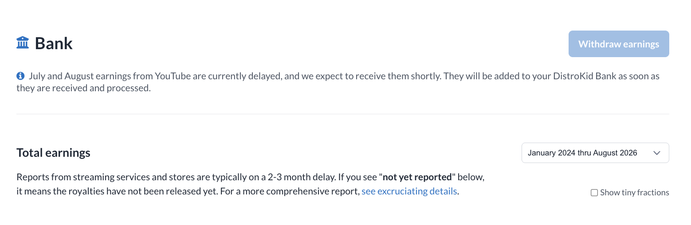

DistroKid Alternative for AI Music: Where Can AI Songs Still Get Released in 2026?
Why So Many Artists Are Searching for a DistroKid Alternative
For years, DistroKid was the default answer to "how do I get my song on Spotify?" In autumn 2026, that default is being questioned. Open the DistroKid Bank right now and many artists see the same banner:

DistroKid's help center first said YouTube's July 2026 earnings would arrive within about 30 days, and blamed a problem on YouTube's side. That window passed. The banner now covers July and August and simply says the money is expected "shortly". DistroKid says other stores are not affected. Still, for creators whose income comes mostly from YouTube and Content ID, two missing months is a real problem.
Payments are only half the story, though. The other half, and the one this guide focuses on, is AI music.
The Bigger Issue for AI Creators
On paper, DistroKid accepts music made with AI tools. Its published rules ask that you own 100% of the rights, do not impersonate real artists' voices, and do not upload mass-generated spam. Since spring 2026, the upload form also asks which parts of a track were AI-generated. In practice, a growing number of Suno and Udio users say their AI-heavy releases are being rejected at review or pulled later, and that the reasons are not always explained.
If your catalog is built with AI, a rejection does more than delay one song. It cuts off your income. So the real question is not "which distributor is cheapest?" It is "which distributor will reliably deliver my AI music, and to which stores?"
How Each Distributor Treats AI Music (2026)
These are the policies each distributor has published, as summarized in industry comparisons during 2026. AI rules change quickly, so check the help center before you upload.
| Distributor | Pricing Model | AI Music Stance | Watch Out For |
|---|---|---|---|
| DistroKid | Annual subscription | Accepted with conditions + AI disclosure | Voice clones, bulk uploads, unclear rights |
| TuneCore | Annual subscription | Restricted: tools trained on licensed data | Suno/Udio tracks may face extra review |
| CD Baby | Pay per release + 9% | Does not accept AI-generated content | Applies even to partial AI |
| Amuse | Free tier / Pro | Accepted with rules | No AI covers; no YouTube Content ID, Meta or Qobuz |
| UnitedMasters | Free tier / paid | No explicit AI limit | Fully AI tracks excluded from TikTok, Facebook, Instagram |
| RouteNote | Free (revenue share) / Premium | Some AI accepted | Must link the AI tools used; no Content ID |
| LANDR | Subscription | Accepted with disclosure | 12 AI songs/month cap; skips Content ID, TikTok, Meta, Deezer |
The pattern is clear. Almost nobody bans AI outright, and almost nobody sends it everywhere. The real differences are in the "Watch Out For" column. Many alternatives quietly drop the same channels: YouTube Content ID, TikTok and Meta. For many AI creators, those are exactly where the money is.
The Other End of the Pipe: Spotify, YouTube and Deezer
Your distributor is only the courier. The streaming platforms set the real rules, and their policies shape every distributor's.
Spotify: Fight Spam, Not AI
Spotify reported removing more than 75 million spam tracks in a single year. It runs a filter that flags mass uploads, duplicate titles and ultra-short filler tracks. It bans unauthorized vocal impersonation outright. It does not ban AI music itself, and has said its policy is not about punishing responsible AI use. In April 2026 it began a beta of AI credits based on the DDEX metadata standard. DistroKid was the first distributor delivering those credits.
YouTube: Originality Decides Monetization
In July 2025, YouTube renamed its "repetitious content" rule to "inauthentic content". The target is mass-produced, templated channels. That includes pure AI "dump" channels that upload hundreds of near-identical tracks. AI-assisted music with real creative input can still earn. Disclosing AI with YouTube's altered or synthetic content label does not, by itself, affect monetization. In May 2026, YouTube made those labels more visible to viewers.
Deezer: The Data Point Everyone Quotes
Deezer tags AI tracks automatically. In April 2026 it reported receiving about 75,000 AI tracks a day, around 44% of all new uploads, while AI music accounted for only 1–3% of streams. Deezer says up to 85% of those AI streams were detected as fraudulent and demonetized. Tagged tracks are also left out of algorithmic recommendations and editorial playlists.
| Platform | AI Allowed? | Labeling | Biggest Risk |
|---|---|---|---|
| Spotify | Yes | DDEX AI credits (beta) | Spam filter, impersonation takedowns |
| YouTube | Yes | Creator-applied synthetic label | Demonetization for mass-produced content |
| Deezer | Yes | Automatic AI detection tag | No recommendations; fraud demonetization |
A Practical Checklist Before You Switch
- Own the commercial rights. On Suno, only songs made on a paid plan come with commercial-use rights. Free-tier songs stay Suno's.
- Disclose honestly. Every major platform is moving toward AI labels. Hiding AI use is a bigger long-term risk than admitting it.
- Never clone a real voice. Impersonation is the one rule that Spotify, YouTube and every distributor above agree on.
- Release like an artist, not a content farm. Fewer, finished tracks with real artwork and metadata. Volume is the clearest spam signal.
- Keep your receipts. Save project files, stems, prompts and lyric drafts. They are your proof of human contribution if a track is disputed.
- Check the store list, not just the headline. A distributor that "accepts AI" but skips Content ID and TikTok may not fit a YouTube-first catalog.
- Plan the move carefully. Reuse your existing ISRCs when you switch distributors, so you keep your stream counts and playlist placements. See our ISRC & UPC guide.
The Bottom Line
There is no single "best DistroKid alternative" for AI music. There is only the best fit for where your audience listens. If YouTube and Content ID matter most, look closely at which stores each distributor actually delivers to. If you mostly need Spotify and Apple Music, most options above will work, as long as your rights are clean and your release habits look human. The industry's direction is consistent across every platform: AI is allowed; spam, impersonation and undisclosed mass uploads are not.
For a broader, non-AI comparison of pricing and features, see our Best DistroKid Alternatives in 2026.